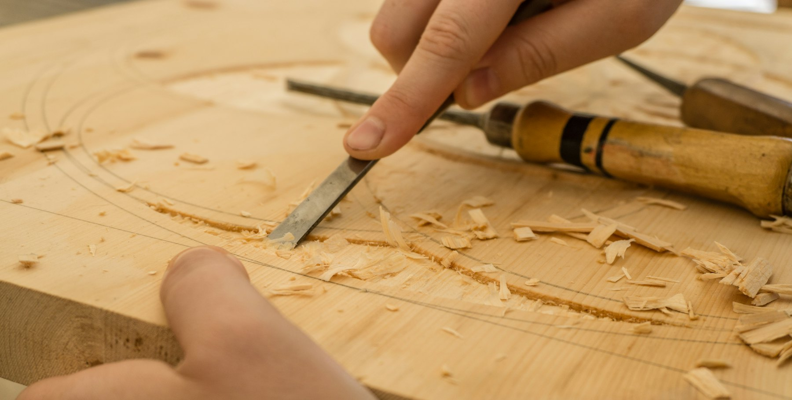
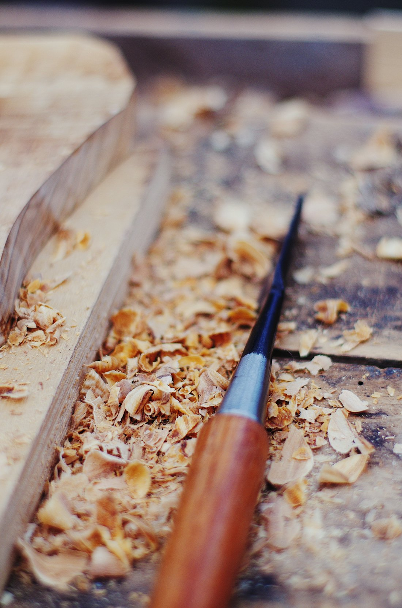
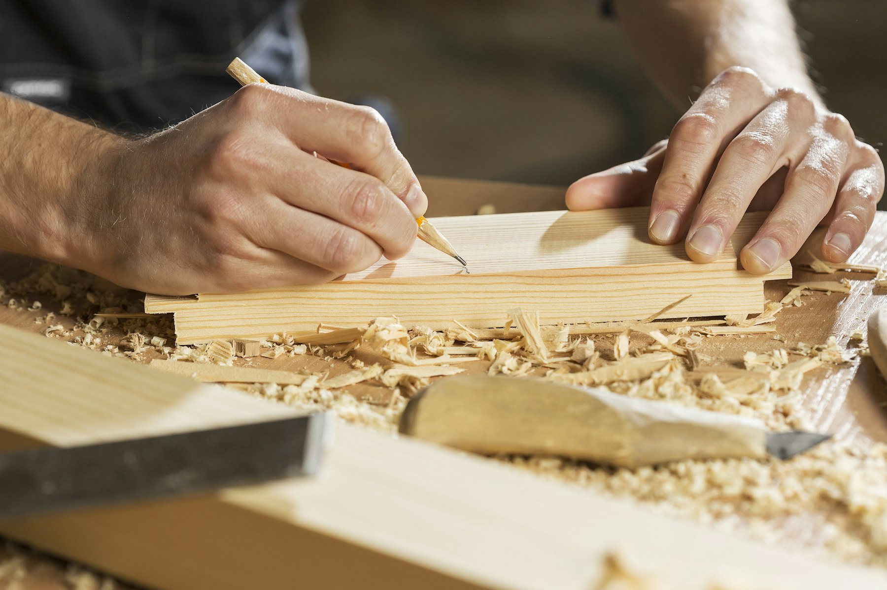

How an Obsidian is made, from the written spec to the final setup
Every neck and body is made to our specification. The finish, the fretwork and the setup, the parts you feel every time you play, are done by hand in our shop by the one person who signs the build sheet.
The seven stages of a build
One person does the finish, the fretwork, the assembly and the setup on each guitar, and signs for all of it.

Spec
Your written spec sets every dimension: woods and grades, neck profile, radius, fret size, scale, pickups, hardware and finish. Everything after this is checked against it.
Neck and body, made to spec
The neck and body are made to that spec, then measured against it with calipers and radius gauges before any finish goes on.
Finishing
Thin coats, sprayed by hand and wet-sanded between them. Nitro gets weeks of curing before it’s buffed.
Fretwork
Stainless frets are leveled, crowned and polished by hand. Ends are rolled so the board edge feels worn-in on day one.
Nut
The bone or graphite nut is shaped, fitted and slotted by hand for the string gauges you play.
Assembly
Hardware, pickups and electronics go in, and every pickup is bench-tested before it does.
37-point setup
Nut slots, relief, action, intonation, pickup heights, electronics, hardware torque. Each point is measured and recorded on your build sheet.

Quench, the standard every Obsidian neck is held to
Obsidian forms when lava is quenched: cooled so fast it turns to glass. We borrowed the name for the part of the guitar we’re most stubborn about.
- Spec. Every neck, maple or mahogany, is made to our profile specs: wood, profile, radius and fret size. Or send us measurements from a neck you love, and it’s made to those.
- Frets. In our shop the frets are leveled, crowned and polished by hand, and the ends are rolled.
- Nut. The nut is cut and fitted by hand, with slots matched to your string gauges.
- Finish and setup. The neck is finished, then the guitar is set up to your measurements: relief, action, intonation.
Why bother? Most of what makes a neck feel right or wrong happens at the frets, the nut and the setup, and that work is done by hand in our shop on every guitar. Roasted maple is the standard neck on the Andesite, Tephra, Rhyolite and Scoria, with mahogany as an option; the Basalt’s set neck is mahogany, with roasted maple as an option. Quench is a standard we hold ourselves to, not a patent or a certification.
Certificate of authenticity and provenance
Every Obsidian ships with a Provenance File, our certificate of authenticity. It isn’t a third-party certification. It’s our signed record of exactly what went into your guitar.
- Instrument number, one sequence across every model starting at No. 1, stamped in the neck heel and logged in our build register.
- Signed build sheet with your full spec and final setup measurements: action, relief, pickup heights, weight.
- Wood record: the species and grade of the neck, body and fretboard woods.
- Signature of the one person who finished, fretted and set up your guitar.
Your build journal
During your build you get a private journal page with photos and notes at six stages: spec sign-off, neck and body check, finish, fretwork, assembly, setup. When the guitar ships, the journal is archived with your serial number so a future owner can see how it was made.

We specify wood for how it behaves, and record what went into your guitar
We use alder, swamp ash, mahogany, korina, roasted maple and figured maple, specified by species and grade. The species and grade of every wood go on your build sheet. We don’t use endangered species, and we won’t pretend a board is rarer than it is.
Not sure which wood fits your sound? Read our guide to tonewood.

Each build sheet carries the name of the one person who finished and set up the guitar
Obsidian was founded by luthier Elias Marr after years on a repair bench. Every guitar is finished, fretted and set up by one person, and that person signs for it.
Meet the builders →A day at the bench, unedited.